import matplotlib.pyplot as plt
import pandas as pd
from sklearn.feature_extraction.text import CountVectorizer
import numpy as np
from sklearn.metrics import accuracy_scoreRegression
Import
Read and re-format
#RELOAD FILE AND PRETEND THAT IS OUR STARTING POINT
df=pd.read_csv('../eda/ev-wiki-crawl-results.csv')
print(df.shape)
#CONVERT FROM STRING LABELS TO INTEGERS
labels=[]; #y1=[]; y2=[]
y1=[]
for label in df["label"]:
if label not in labels:
labels.append(label)
print("index =",len(labels)-1,": label =",label)
for i in range(0,len(labels)):
if(label==labels[i]):
y1.append(i)
y1=np.array(y1)
# CONVERT DF TO LIST OF STRINGS
corpus=df["text"].to_list()
y2=df["sentiment"].to_numpy()
print("number of text chunks = ",len(corpus))
print(corpus[0:3])(1225, 3)
index = 0 : label = electric vehicle
index = 1 : label = gasoline vehicle
index = 2 : label = hybrid vehicle
number of text chunks = 1225
['electric motive power started 1827 hungarian priest nyos jedlik built first crude viable electric motor used stator rotor commutator next year used power small car 1835 professor sibrandus stratingh university groningen netherlands built small scale electric car sometime 1832 1839 robert anderson scotland invented first crude electric carriage powered non rechargeable primary cell american blacksmith inventor thomas davenport built toy electric locomotive powered primitive electric motor 1835 1838 scotsman named robert davidson built electric locomotive attained speed four mile per hour km england patent granted 1840 use rail conductor electric current similar american patent issued lilley colten 1847', 'first mass produced appeared america early 1900s 1902 studebaker automobile company entered automotive business though also entered gasoline vehicle market 1904 however advent cheap assembly line car ford motor company popularity electric car declined significantly due lack electricity grid limitation storage battery time electric car gain much popularity however electric train gained immense popularity due economy achievable speed 20th century electric rail transport became commonplace due advance development electric locomotive time general purpose commercial use reduced specialist role platform truck forklift truck ambulance tow tractor urban delivery vehicle iconic british milk float', '20th century uk world largest user electric road vehicle electrified train used coal transport motor use valuable oxygen mine switzerland lack natural fossil resource forced rapid electrification rail network one earliest rechargeable battery nickel iron battery favored edison use electric car ev among earliest automobile preeminence light powerful internal combustion engine ice electric automobile held many vehicle land speed distance record early 1900s produced baker electric columbia electric detroit electric others one point history outsold gasoline powered vehicle']Vectorize the text data
# INITIALIZE COUNT VECTORIZER
# minDF = 0.01 means "ignore terms that appear in less than 1% of the documents".
# minDF = 5 means "ignore terms that appear in less than 5 documents".
vectorizer=CountVectorizer(min_df=0.0001)
# RUN COUNT VECTORIZER ON OUR COURPUS
Xs = vectorizer.fit_transform(corpus)
X=np.array(Xs.todense())
#CONVERT TO ONE-HOT VECTORS
maxs=np.max(X,axis=0)
X=np.ceil(X/maxs)
# DOUBLE CHECK
print(X.shape,y1.shape,y2.shape)
print("DATA POINT-0:",X[0,0:10],"y1 =",y1[0]," y2 =",y2[0])(1225, 8233) (1225,) (1225,)
DATA POINT-0: [0. 0. 0. 0. 0. 0. 0. 0. 0. 0.] y1 = 0 y2 = -0.7506Partition Data
Assignment 3.2.4: Break data into an 80-20 training/test set
#INSERT CODE TO PARTITION DATASET INTO TRAINING-TEST
from sklearn.model_selection import train_test_split
test_ratio=0.2
x_train, x_test, y_train, y_test = train_test_split(X, y1, test_size=test_ratio, random_state=0)
y_train=y_train.flatten()
y_test=y_test.flatten()
print("x_train.shape :",x_train.shape)
print("y_train.shape :",y_train.shape)
print("X_test.shape :",x_test.shape)
print("y_test.shape :",y_test.shape)x_train.shape : (980, 8233)
y_train.shape : (980,)
X_test.shape : (245, 8233)
y_test.shape : (245,)Utility function
- Write a function to report accuracy
- Note this will act on object stored in pythons global scope. Therefore as long as everything is named the same you can recycle it for multiple models
def report(y,ypred):
#ACCURACY COMPUTE
print("Accuracy:",accuracy_score(y, ypred)*100)
print("Number of mislabeled points out of a total %d points = %d"
% (y.shape[0], (y != ypred).sum()))
def print_model_summary():
# LABEL PREDICTIONS FOR TRAINING AND TEST SET
yp_train = model.predict(x_train)
yp_test = model.predict(x_test)
print("ACCURACY CALCULATION\n")
print("TRAINING SET:")
report(y_train,yp_train)
print("\nTEST SET (UNTRAINED DATA):")
report(y_test,yp_test)
print("\nCHECK FIRST 20 PREDICTIONS")
print("TRAINING SET:")
print(y_train[0:20])
print(yp_train[0:20])
print("ERRORS:",yp_train[0:20]-y_train[0:20])
print("\nTEST SET (UNTRAINED DATA):")
print(y_test[0:20])
print(yp_test[0:20])
print("ERRORS:",yp_test[0:20]-y_test[0:20])Regression model: KNN
- fit y2 (sentiment score from -1 to 1) instead of y1 (classes)
Hyper-Parameter tuning
from sklearn.neighbors import KNeighborsRegressor
from sklearn.metrics import mean_absolute_percentage_error
from sklearn.metrics import mean_absolute_error
# HYPER PARAMETER SEARCH FOR OPTIMAL NUMBER OF NEIGHBORS
num_neighbors_2=[]
train_error=[]
test_error=[]
# LOOP OVER HYPER-PARAM
for i in range(1,33):
# INITIALIZE MODEL
model = KNeighborsRegressor(n_neighbors=i)
# TRAIN MODEL
model.fit(x_train,y_train)
# OUTPUT PREDICTIONS FOR TRAINING AND TEST SET
yp_train = model.predict(x_train)
yp_test = model.predict(x_test)
print("n_neighbors =",i)
# shift=1+np.min(y_train) #add shift to remove division by zero
err1=mean_absolute_error(y_train, yp_train)
err2=mean_absolute_error(y_test, yp_test)
num_neighbors_2.append(i)
train_error.append(err1)
test_error.append(err2)
print(" train MAE:",err1)
print(" test MAE:" ,err2)n_neighbors = 1
train MAE: 0.3040816326530612
test MAE: 0.926530612244898
n_neighbors = 2
train MAE: 0.4627551020408163
test MAE: 0.8428571428571429
n_neighbors = 3
train MAE: 0.5479591836734694
test MAE: 0.7945578231292517
n_neighbors = 4
train MAE: 0.5816326530612245
test MAE: 0.7520408163265306
n_neighbors = 5
train MAE: 0.5932653061224491
test MAE: 0.7240816326530614
n_neighbors = 6
train MAE: 0.585374149659864
test MAE: 0.6965986394557823
n_neighbors = 7
train MAE: 0.5906705539358601
test MAE: 0.6857142857142857
n_neighbors = 8
train MAE: 0.5923469387755103
test MAE: 0.6586734693877551
n_neighbors = 9
train MAE: 0.591156462585034
test MAE: 0.6476190476190476
n_neighbors = 10
train MAE: 0.5948979591836735
test MAE: 0.6412244897959185
n_neighbors = 11
train MAE: 0.5950834879406307
test MAE: 0.6430426716141002
n_neighbors = 12
train MAE: 0.5951530612244897
test MAE: 0.6414965986394559
n_neighbors = 13
train MAE: 0.5978021978021978
test MAE: 0.6417582417582417
n_neighbors = 14
train MAE: 0.5991253644314869
test MAE: 0.6396501457725947
n_neighbors = 15
train MAE: 0.6009523809523809
test MAE: 0.6345578231292516
n_neighbors = 16
train MAE: 0.6007015306122448
test MAE: 0.6364795918367347
n_neighbors = 17
train MAE: 0.6027611044417768
test MAE: 0.6357743097238895
n_neighbors = 18
train MAE: 0.6044784580498866
test MAE: 0.6333333333333334
n_neighbors = 19
train MAE: 0.604296455424275
test MAE: 0.6326530612244898
n_neighbors = 20
train MAE: 0.605561224489796
test MAE: 0.6308163265306123
n_neighbors = 21
train MAE: 0.6053449951409134
test MAE: 0.6359572400388727
n_neighbors = 22
train MAE: 0.6055658627087199
test MAE: 0.6363636363636364
n_neighbors = 23
train MAE: 0.6061668145519077
test MAE: 0.6346051464063887
n_neighbors = 24
train MAE: 0.6059098639455782
test MAE: 0.6335034013605442
n_neighbors = 25
train MAE: 0.6081632653061224
test MAE: 0.6349387755102041
n_neighbors = 26
train MAE: 0.6085557299843014
test MAE: 0.6346938775510202
n_neighbors = 27
train MAE: 0.6096371882086168
test MAE: 0.6374905517762662
n_neighbors = 28
train MAE: 0.6099854227405247
test MAE: 0.6357142857142857
n_neighbors = 29
train MAE: 0.6112244897959184
test MAE: 0.6378606615059818
n_neighbors = 30
train MAE: 0.6113945578231292
test MAE: 0.6371428571428571
n_neighbors = 31
train MAE: 0.6120803159973666
test MAE: 0.6359447004608295
n_neighbors = 32
train MAE: 0.6123405612244898
test MAE: 0.6357142857142857Convergence plot
plt.plot(num_neighbors_2,train_error ,linewidth=2, color='k')
plt.plot(num_neighbors_2,test_error ,linewidth=2, color='b')
plt.xlabel("Number of neighbors in KNN")
plt.ylabel("Training (black) and test (blue) MAE (error)")Text(0, 0.5, 'Training (black) and test (blue) MAE (error)')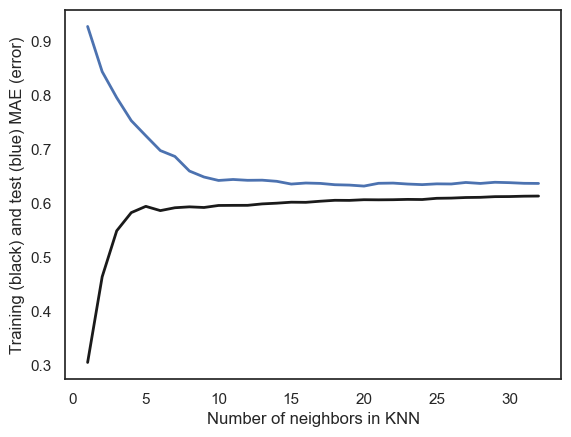
Re-train with optimal parameters
# INITIALIZE MODEL
model = KNeighborsRegressor(n_neighbors=35)
# TRAIN MODEL
model.fit(x_train,y_train)
# OUTPUT PREDICTIONS FOR TRAINING AND TEST SET
yp_train = model.predict(x_train)
yp_test = model.predict(x_test)Parity Plot
Plotting y_pred vs y_data lets you see how good the fit is
The closer to the line y=x the better the fit (ypred=ydata –> prefect fit)
plt.plot(y_train,yp_train ,"o", color='k')
plt.plot(y_test,yp_test ,"o", color='b')
plt.plot(y_test,y_test ,"-", color='r')
plt.xlabel("y_data")
plt.ylabel("y_pred (blue=test)(black=Train)")Text(0, 0.5, 'y_pred (blue=test)(black=Train)')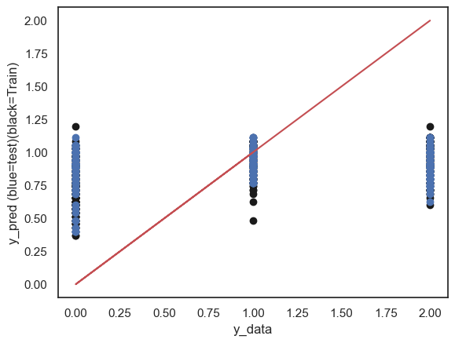
Plot tree
from sklearn import tree
def plot_tree(model):
fig = plt.figure(figsize=(25,20))
_ = tree.plot_tree(model,
filled=True)
plt.show()plot_tree(model)
#loop over columns
for i in range(0, x_train.shape[1]):
print(i)
plt.plot(x_train.iloc[:, i], y_train, "o", color='b')
plt.show()0
1
2
3
4
5
6
7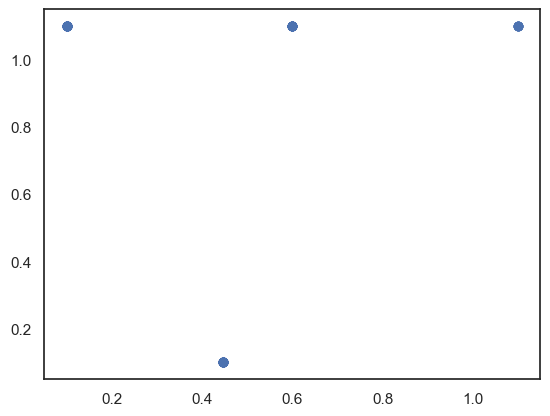
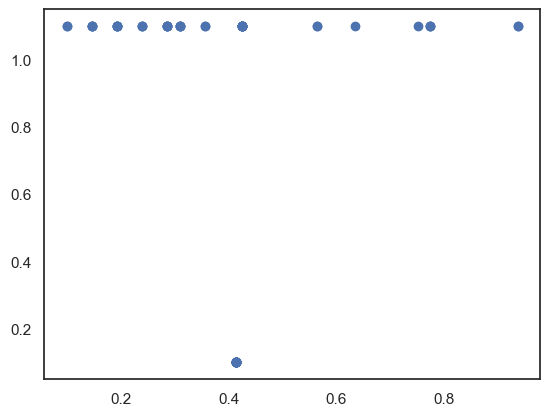
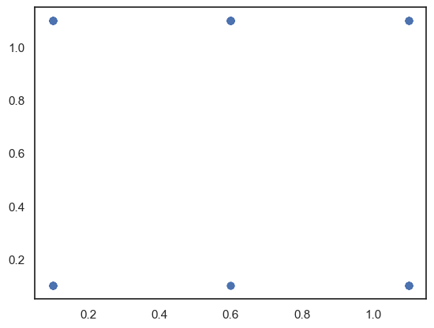
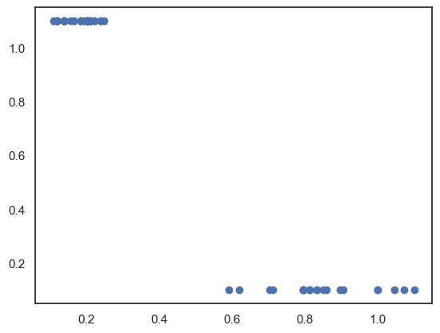
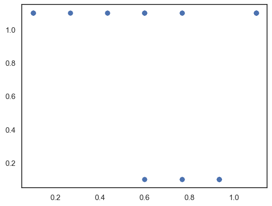
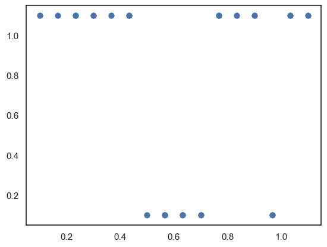
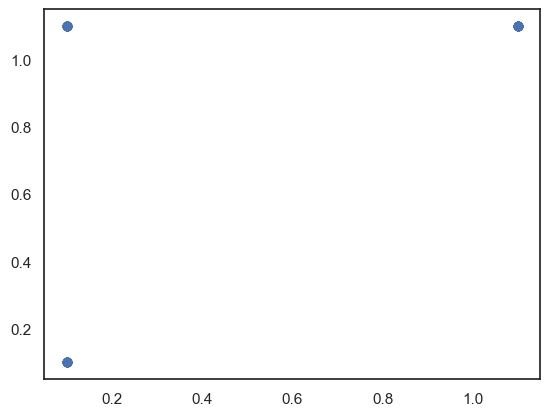
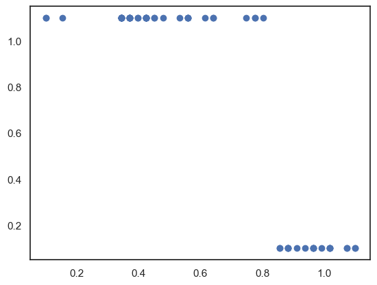
# LINEAR REGRESSION
from sklearn.linear_model import LinearRegression
model = LinearRegression().fit(X, y)
# OUTPUT PREDICTIONS FOR TRAINING AND TEST SET
yp_train = model.predict(x_train)
yp_test = model.predict(x_test)
plt.plot(y_train,yp_train ,"o", color='k')
plt.plot(y_test,yp_test ,"o", color='b')
plt.plot(y_train,y_train,"-", color='r')
plt.xlabel("y_data")
plt.ylabel("y_pred (blue=test)(black=Train)")
err1=100.0*np.mean(np.absolute((yp_train-y_train)/y_train))
err2=100.0*np.mean(np.absolute((yp_test-y_test)/y_test))
print(" train error:",err1)
print(" test error:" ,err2) train error: 45.71642474234835
test error: 27.859375656835915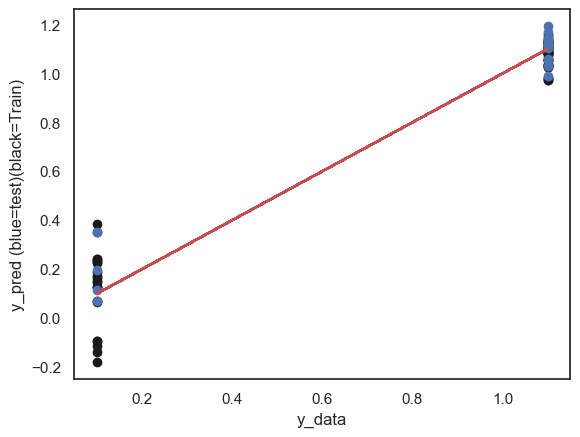
model = DecisionTreeRegressor(min_samples_split=50)
model.fit(x_train,y_train)
plot_tree(model)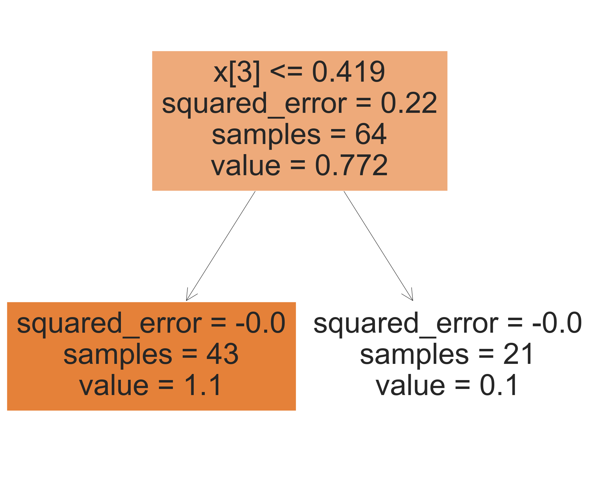
from sklearn.neural_network import MLPRegressor
model = MLPRegressor(hidden_layer_sizes=(32,32,32),random_state=1, max_iter=10000).fit(x_train, y_train)
# OUTPUT PREDICTIONS FOR TRAINING AND TEST SET
yp_train = model.predict(x_train)
yp_test = model.predict(x_test)
plt.plot(y_train,yp_train ,"o", color='k')
plt.plot(y_test,yp_test ,"o", color='b')
plt.plot(y_train,y_train,"-", color='r')
plt.xlabel("y_data")
plt.ylabel("y_pred (blue=test)(black=Train)")
err1=100.0*np.mean(np.absolute((yp_train-y_train)/y_train))
err2=100.0*np.mean(np.absolute((yp_test-y_test)/y_test))
print(" train error:",err1)
print(" test error:" ,err2) train error: 40.00431316772487
test error: 27.20196900065661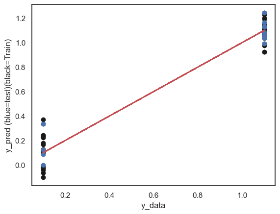